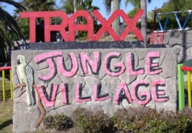
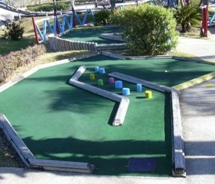

| H:
Traxx Jungle Village 8801 Astronaut Blvd, Cape Canaveral
(west side of A1A)
(321) 783-0595
 | 
| Price: $6.50 Number of Courses: 2 Upkeep: C Originality: B Hole-in-One Difficulty: Hard Par Difficulty: Medium Music: Hip-Hop
This course features a jungle theme and a variety of holes. Some holes have been redone recently, and some are still desperately in need of repair. The pars are inaccurate, which can be frustrating. And hole 11 is the hardest hole I have ever played: a slanted multilevel contraption. Everyone in my party took the maximum 6 strokes on a par 3 hole! They also feature go-carts, batting cages, and the largest arcade I've seen attached to a mini-golf course. |